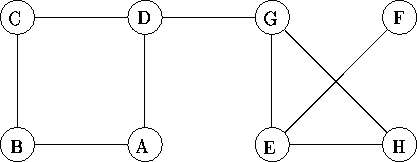

| Network Wars |
It is the year 2126 and comet Swift-Tuttle has struck the earth as predicted. The resultant explosion emits a large cloud of high energy neutrons that eliminates all human life. The accompanying electro-magnetic storm causes two unusual events: many of the links between various parts of the electronic network are severed, and some postgraduate AI projects begin to merge and mutate, in much the same way as animal life did several million years ago. In a very short time two programs emerge, Paskill and Lisper, which move through the network marking each node they visit: Paskill activates a modified Prolog interpreter and Lisper activates the `Hello World' program. However `Hello World' has mutated into an endless loop that so ties up the node that no other program, not even Lisper, can re-enter that node and the Prolog interpreter immediately reverse compiles (and destroys) any program that enters. However, Paskill knows which nodes it has visited and never tries to re-enter them. Thus if Lisper attempts to enter a node already visited by Paskill it will be annihilated; neither can enter a node already visited by Lisper, if either (or both) cannot move both will halt and if they ever arrive at a node simultaneously they annihilate each other. Both programs move through the network at the same speed.
Write a program to simulate these events. All nodes in the the network are labelled with a single uppercase letter as shown below. When moving to the next node, Paskill searches alphabetically forwards from the current node, whereas Lisper searches alphabetically backwards from the current node, both wrapping round if necessary. Thus, (in the absence of the other) if Paskill enters the network below at A, it would visit the nodes in the order A, B, C, D, G, H, E, F; if Lisper enters the network at H it would visit them in the order H, G, E, F. Simulation stops when one or more of the above events occurs. If more than one event occurs, mention Paskill first.

Input will consist of a series of lines. Each line will describe a network and indicate the starting nodes for the two programs. A network is described as a series of nodes separated by `;' and terminated by a period (`.'). Each node is described by its identifier, a `:' and one or more of the nodes connected to it. Each link will be mentioned at least once, as will each node, although not all nodes will be `described'. After the period will appear the labels of the starting nodes--first Paskill and then Lisper. No line will contain more than 255 characters. The file will be terminated by a line consisting of a single #.
Output will consist of one line for each network. Each line will specify the terminating event and the node where it occurs. The terminating event is one or two of the following:
A:BD;C:BD;F:E;G:DEH;H:EG. A H E:AB. A B B:ACD. B D A:B;B:C;D:E. A D #
Paskill trapped in node D Lisper trapped in node F Both annihilated in node E Lisper destroyed in node B Lisper trapped in node E